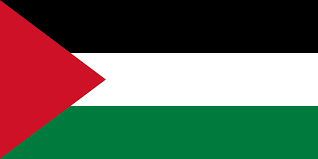
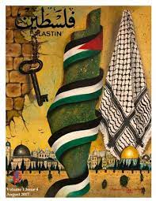

free Palestinians
On Oct. 7, Palestinians from Gaza carried out attacks in Israel that killed at least 1,200 Israelis, injured thousands more, and took an estimated 240 hostages.Israel immediately launched attacks on Gaza. Since then, at least 23,357 Palestinians in Gaza have been killed, 40% of them children. Violence continues to escalate and those numbers continue to grow.
��Israel also placed Gaza under hermetic closure—blocking access to fuel, water, electricity, food, medical supplies, and other goods. In the West Bank violence against Palestinians also escalated as settler attacks, mass arrest campaigns, and military raids increased in number. At least 341 Palestinians have been killed and hundreds more injured in the West Bank following the Hamas attack.
��AFSC mourns with those who have lost loved ones and all who are suffering. We will continue to work for the chang es needed to end this violence and build a just and lasting peace.
Palestinian name
The name Palestine has long been in popular use as a general term to denote a traditional region,
but this usage does not imply precise boundaries. The perception of what constitutes Palestine’
s eastern boundary has been especially fluid, although the boundary frequently has been
perceived as lying east of the Jordan River, extending at times to the edge of the Arabian
Desert. In contemporary understanding, however, Palestine is generally defined as a region
bounded on the east by the Jordan River, on the north by the border between modern Israel
and Lebanon, on the west by the Mediterranean Sea (including the coast of Gaza), and on the
south by the Negev, with its southernmost extension reaching the Gulf of Aqaba. Tomb of
Mohammed Bin Ali, Salalah, Oman. Britannica Quiz A View of the Middle East The strategic importance of the area is immense: through it pass the main roads from Egypt to Syria and from the Mediterranean to the hills beyond the Jordan River. Settlement depends closely on water, which is almost never abundant. Precipitation, which arrives in the cool half of the year, decreases in amount in general from north to south and from the coast inland. Perennial rivers are few, and the shortage of water is aggravated by the
porous nature of the limestone rocks over much of the country.
creted by:@you_ssef6806
helped by:@moha_fg
for more info